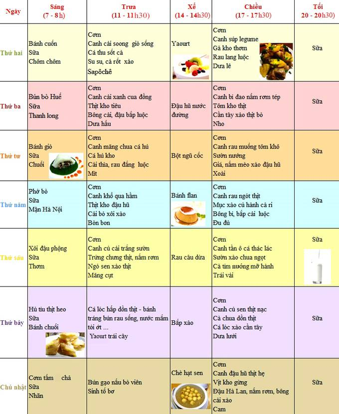
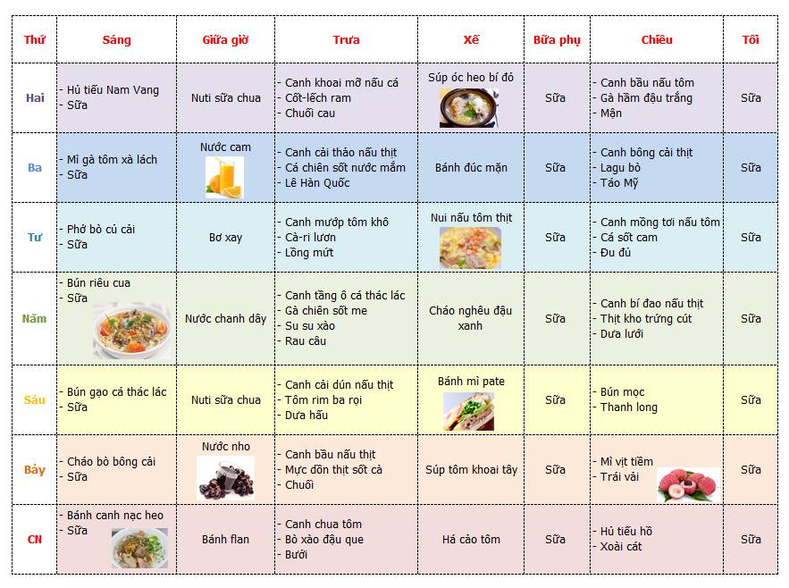

Ý nghĩa của tháp dinh dưỡng:
1. Giúp cải thiện thói quen ăn uống cho trẻ
Nhiều người muốn trẻ có chế độ ăn uống tốt hơn nhưng không biết bắt đầu từ đâu. Tháp dinh dưỡng sẽ hướng dẫn cho bạn loại thức ăn nào cần cho trẻvăn nhiều hơn và thức ăn nào phải cắt giảm.2. Nhắc nhở bạn cho trẻ ăn uống lành mạnh
Để trẻ có một sức tốt và phát triển toàn diện, các chuyên gia khuyến cáo chúng ta nên dựa vào tháp dinh dưỡng để xây dựng một chế độ ăn uống hợp lý cho trẻ.Việc chăm sóc, nuôi dưỡng trẻ đúng cách ngay từ những năm đầu đời có ý nghĩa vô cùng quan trọng, quyết định đến tương lai phát triển lâu dài của trẻ. Chế độ dinh dưỡng hợp lý không chỉ giúp trẻ em tăng trưởng tốt về thể chất, sức khỏe mà còn cả về trí tuệ. Chế độ dinh dưỡng của trẻ ở trường mầm non góp phần quan trọng trong sự phát triển đó vì thời gian trẻ hoạt động, ăn, ngủ ở trường chiếm tỷ lệ khá lớn so với thời gian trong ngày. Nếu có chế độ dinh dưỡng khoa học, hợp lý ở trường mầm non sẽ giúp trẻ phát triển hài hòa về thể chất, tinh thần.
Phân chia thực phẩm theo nhóm:
Chất đạm bao gồm sữa thịt, cá, trứng, đậu đỗ và chế phẩm của chúng (đậu phụ, sữa đậu nành...).
Các chất béo bao gồm chất béo động vật (mỡ, bơ...) và chất béo thực vật (dầu, lạc vừng, dừa...).
Nhóm ngũ cốc cung cấp nhiều tinh bột (gạo, ngô, khoai, sắn...). Là nguồn cung cấp năng lượng chủ yếu của bữa ăn (50-60%).
Nhóm rau quả cung cấp chất khoáng, vitamin.
Xây dựng thực đơn:
Khẩu phần ăn là sự cụ thể hoá của tiêu chuẩn ăn của một người trong một ngày đêm bằng các loại thức ăn sẵn có để đảm bảo nhu cầu về năng lượng và các chất dinh dưỡng khác. Điều quan trọng của khẩu phần ăn là phải cân đối về tỷ lệ các chất dinh dưỡng theo nhu cầu cơ thể. Đặc biệt đối với lứa tuổi trẻ mầm non cần được quan tâm chăm sóc đặc biệt về mặt dinh dưỡng để phát triển. Dựa trên tiêu chí trên nhà trường đã phối kết hợp với nhân viên y tế để xây dựng thực đơn đảm bảo chất lượng bữa ăn của trẻ ở trường đủ chất dinh dưỡng để trẻ có thể phát triển toàn diện.
Tuần 15 (Từ 10-15/12/2018):
Tuần 16 (Từ 16-21/12/2018):
(Thực đơn được tư vấn bởi KS. Trương Thị Nhàn - Phòng TVDD NutiFood)